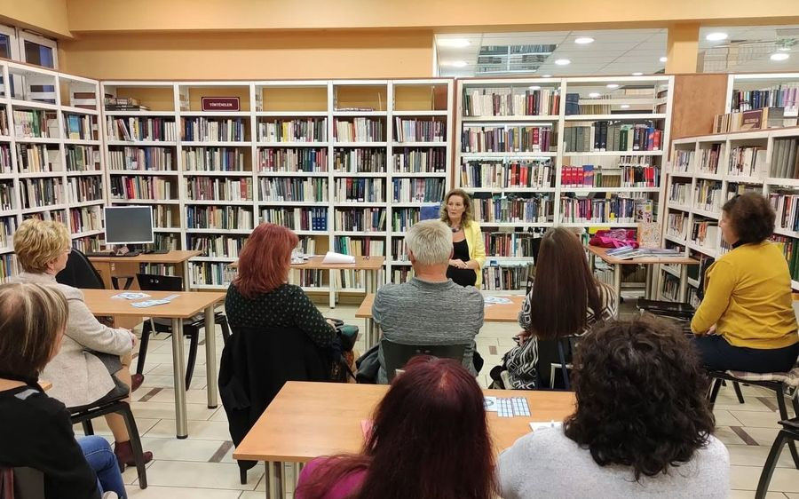
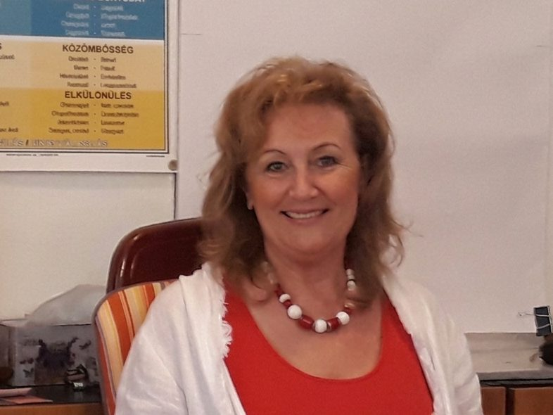
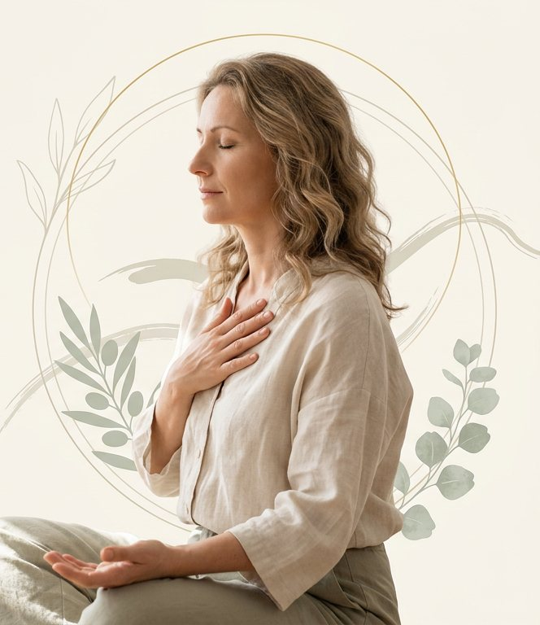
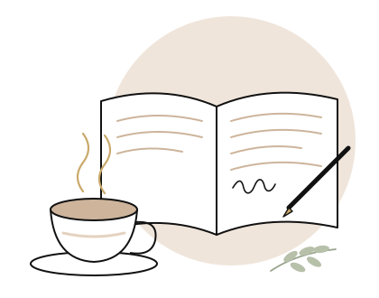

Csengeri Zsuzsa
Ahol a belső út formát ölt
Kineziológus·Oktató·Író
Évtizedek kineziológusi és oktatói tapasztalata, az Informális kineziológia és a Bio-Narratíva megalkotása, valamint öt megírt regény.
Ismerd meg a belső utat és a hátteremetÍrások és regények
A szavak ereje
Az írás számomra nem csupán történetmesélés, hanem az a szellemi tér, ahol a láthatatlan belső folyamatok formát öltenek. Regényeimben az emberi sorsok fordulópontjait, a generációs mintákat és a belső megújulás lehetséges útjait kutatom. Mert minden történet mögött ott a kérdés: hogyan találhatunk haza önmagunkhoz?
Tovább a könyvekhez

Személyes találkozások
Előadások & Programok
Gondolatébresztő előadások korunk problémáiról, stresszkezelésről, párkapcsolati egyensúlyról, gyermeknevelésről, női értékekről és belső megújulásról.
Szeretettel várom a felkéréseiteket
One Brain kineziológia
Szakmai Mentorálás
15 év One Brain oktatói tapasztalat és kineziológusi gyakorlat átadása. Egyéni kísérés segítőknek, terapeutáknak és mindazoknak, akik a belső úton és a hivatásukban a tiszta, hiteles módszert keresik.
Tovább a mentoráláshozSaját módszerem
Informális Kineziológia
Az általam megalkotott módszer a test, a tudatalatti és a sors üzeneteiről. A legfőbb kérdésekre válaszol:
Ki vagyok én, hol vannak a határaim, mik az erősségeim, és mi az a sorsfeladat / mesterprogram, amivel ide érkeztem?
-
Ősi tudás
Az ősi tudásokból, alapvetően a Taóból összegyűjtött információs csomag.
-
Tiszta forrás
Segít visszatérni ahhoz a tiszta forráshoz, ahonnan elindultunk.
-
Saját történet
Nem a hibát keresi, hanem a történetet bontja ki, a blokkok mögötti összefüggésekkel.

Exkluzív · Személyes · Mély
Bio-Narratíva
Írd meg a saját életregényedet.
Életünk egy megíratlan regény, amelynek sorsfordító fejezeteit mi magunk alakítjuk. A Bio-Narratíva nem irodalmi tanfolyam és nem tucatstúdió: ez egy exkluzív, mély önismereti folyamat, amely ötvözi az évtizedes kineziológusi tapasztalatot és a narratív szemléletet. Segít átírni a korlátozó mintáidat, és formába önteni azt a belső utat, amit eddig talán csak szavak nélkül hordoztál.
Bővebben
Lélekjegyzetek
Gondolatok & Rövid írások
Csendes megállók a mindennapok sodrásában. Személyes hangvételű írások az önismeretről, az újrakezdés bátorságáról és azokról a láthatatlan szálakról, amelyek az életünket szövik.
Olvass bele